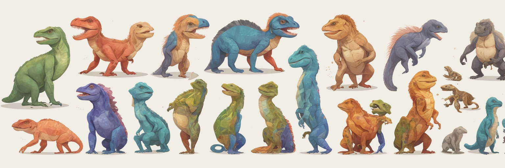

TL;DR
- Diversification is an event-by-event process. A bifurcating tree is usually a useful summary, but it is not the only (or always the best) way to represent what happened.
- If you keep track of “incipient lineages” (sub-species-level entities) and then coarse-grain them into “species,” the result can naturally look like a network rather than a clean tree—especially when information is lost through extinction or coarse-graining.
- A tree reconstructed from traits can agree—or strongly disagree—with a tree reconstructed from the historical event chain. Increasing trait dimensionality can help under certain models, but it is not a magic fix.
Interactive simulator
Press Grow to run one diversification trajectory. If the run becomes uninformative (e.g., everything goes extinct), press Reset and try a new parameter setting. You can Pause any time.
- Drag nodes in the graph panels to declutter the layout.
- Hover a node/tip in any panel to highlight its counterpart(s) across all panels.
- If you see “strange” trees, treat that as the point: reconstruction can be ambiguous or misleading when information is insufficient.
Legend. Blue nodes = non-mutating (clonal) lineages; red nodes = mutating lineages; grey nodes = extinct lineages.
What each panel shows
- Full lineage graph (Panel 1). The “event log in picture form”: who descended from whom, including intermediate (incipient) lineages and extinct lineages.
- Coarsened graph (Panel 2). A coarse-grained view where multiple consecutive mutational steps are required before you label the outcome as a “new species” (controlled by Coarsen Level).
- Tree reconstructed from the coarsened graph (Panel 3). A forced tree summary of Panel 2. When Panel 2 is not tree-like, the reconstruction can become ambiguous (multiple trees explain the same coarse-grained information).
- Tree reconstructed from trait values (Panel 4). A tree inferred only from the trait table of the “species” you ended up with. This mimics real life: we usually observe characters (traits, sequences), not the true event chain.
Why start from a network instead of a tree
A rooted tree is the natural mathematical object when descent is strictly bifurcating and there is a single lineage history shared by everything you measure. That assumption is often a useful approximation, and an entire literature models diversification as stochastic branching processes (birth–death models) and then asks: “Given the extant tips, what can we infer about the underlying rates?”[2][3]
But there are two big reasons a tree is not the whole story:
In this demo, the “network” is also serving a third purpose: it keeps the fine-grained history visible. Even if your underlying generative model is tree-like, coarse-graining and extinction can erase information so aggressively that the most honest representation of what you still know can be graph-like.
The model behind this demo
Internally, each run is a continuous-time stochastic process simulated with a Gillespie-style event sampler (stochastic simulation algorithm).[1] At any moment, each extant lineage can experience:
- Birth: lineage splits, producing a new lineage that is (in this toy model) “non-mutating” in the sense of not advancing the speciation counter.
- Mutation: lineage splits, producing a new lineage that advances the mutation counter and updates traits.
- Death: the lineage goes extinct (greyed out).
Coarsen level as a cartoon of gradual speciation
The Coarsen Level is intentionally not a literal “number of mutations in a genome.” It is a coarse unit of evolutionary differentiation: how many consecutive meaningful steps you require before you declare “this is a distinct species now.” Conceptually, this rhymes with protracted speciation models where speciation is a process with an initiation stage (incipient lineages) and a completion stage (a “good species”).[4][5]
Branch lengths without confusion
“Branch length” is overloaded in evolutionary biology. In different contexts it can mean:
- Elapsed time (e.g., time-calibrated trees, diversification simulations). In birth–death thinking, internal waiting times are central objects.[2][3]
- Expected substitutions per site (many molecular phylogenies inferred under sequence evolution models). Branch lengths then measure genetic change, not absolute time.
- Expected trait variance under Brownian motion: the variance of trait change grows linearly with time, and that time scaling is what makes branch lengths matter in comparative methods.[13][14]
The toggle Show Branch Lengths is there because (i) lengths are informative, but (ii) they can tempt you into overinterpreting a tree: a “nice-looking” tree with lengths does not guarantee that the underlying history is identifiable from the information you supplied.
Two reconstructions and why they disagree
The point of this simulator is not to worship a particular reconstruction. It’s to watch where information is thrown away.
Tree from the coarsened graph
- You take a lineage-level history and compress it into “species-level” units. Compression can merge distinct micro-histories into the same macro-state.
- If the coarsened object is not strictly tree-like, any tree reconstruction is a choice among multiple plausible summaries.
- Extinction can delete the very lineages that would have anchored the root or clarified the branching order, increasing ambiguity.[2]
Tree from traits
- You infer relationships from observed character data, here simulated under Brownian motion.[13][14]
- With few traits, noise dominates: multiple trees can explain the same trait table.
- With more (independent) traits, you average over randomness and can recover signal more reliably—up to the limits imposed by the model.
- Model mismatch matters: even with lots of characters, inference can be systematically misleading if the assumptions are wrong (classic examples exist even in simpler discrete-character settings).[15]
Experiments to try in the simulator
- Turn extinction up and watch identifiability collapse. Increase Death Rate until many lineages die out. Compare Panel 3 vs Panel 4 and toggle Prune Extinct Lineages. Ask: “How much of the early history survives into the inferred objects?”
- Dial speciation gradualness. Sweep Coarsen Level from 0 to 6 while keeping the run going. Does the coarsened object become more/less tree-like?
- Trait dimensionality as “number of characters.” Fix the diversification regime, then rerun with Trait Dimensions = 1, 3, 5, 10. Do you see Panel 4 stabilize? Under Brownian motion, this is the intuition behind “more characters helps,” but it is not guaranteed in the presence of strong extinction or rapid bursts.
- Fast radiation vs slow radiation. Try high Birth+Mutation with low Death (many splits quickly), then compare to slower regimes. Rapid branching compresses internal times and can make different reconstructions disagree more strongly.
References
Numbers in brackets link to the sources used for the conceptual framing of this post.
- Gillespie DT. 1977. Exact stochastic simulation of coupled chemical reactions. J Phys Chem. doi:10.1021/j100540a008
- Nee S, May RM, Harvey PH. 1994. The reconstructed evolutionary process. Phil Trans R Soc B. doi:10.1098/rstb.1994.0068
- Lambert A, Stadler T. 2013. Birth–death models and coalescent point processes: The shape and probability of reconstructed phylogenies. Theor Popul Biol. doi:10.1016/j.tpb.2013.10.002
- Rosindell J, Cornell SJ, Hubbell SP, Etienne RS. 2010. Protracted speciation revitalizes the neutral theory of biodiversity. Ecol Lett. doi:10.1111/j.1461-0248.2010.01463.x
- Etienne RS, Rosindell J. 2012. Prolonging the past counteracts the pull of the present: Protracted speciation can explain observed slowdowns in diversification. Syst Biol. doi:10.1093/sysbio/syr091
- Huson DH, Bryant D. 2006. Application of phylogenetic networks in evolutionary studies. Mol Biol Evol. doi:10.1093/molbev/msj030
- Kong S, et al. 2025. Phylogenetic networks empower biodiversity research. PNAS. doi:10.1073/pnas.2410934122
- Yu Y, Dong J, Liu KJ, Nakhleh L. 2014. Maximum likelihood inference of reticulate evolutionary histories. PNAS. doi:10.1073/pnas.1407950111
- Wen D, Yu Y, Nakhleh L. 2016. Bayesian inference of reticulate phylogenies under the multispecies network coalescent. PLOS Genetics. doi:10.1371/journal.pgen.1006006
- Maddison WP. 1997. Gene trees in species trees. Syst Biol. doi:10.1093/sysbio/46.3.523
- Degnan JH, Rosenberg NA. 2009. Gene tree discordance, phylogenetic inference and the multispecies coalescent. Trends Ecol Evol. doi:10.1016/j.tree.2009.01.009
- Felsenstein J. 1973. Maximum-likelihood estimation of evolutionary trees from continuous characters. Am J Hum Genet. PubMed: 4741844
- Felsenstein J. 1985. Phylogenies and the comparative method. Am Nat. doi:10.1086/284325
- Felsenstein J. 1978. Cases in which parsimony or compatibility methods will be positively misleading. Syst Zool. doi:10.2307/2412923
- Katoh K, Standley DM. 2013. MAFFT multiple sequence alignment software version 7: improvements in performance and usability. Mol Biol Evol. doi:10.1093/molbev/mst010
- Stamatakis A. 2014. RAxML version 8: a tool for phylogenetic analysis and post-analysis of large phylogenies. Bioinformatics. doi:10.1093/bioinformatics/btu033
- Kalyaanamoorthy S, Minh BQ, Wong TKF, von Haeseler A, Jermiin LS. 2017. ModelFinder: fast model selection for accurate phylogenetic estimates. Nat Methods. doi:10.1038/nmeth.4285
- Minh BQ, Schmidt HA, Chernomor O, et al. 2020. IQ-TREE 2: New models and efficient methods for phylogenetic inference in the genomic era. Mol Biol Evol. doi:10.1093/molbev/msaa015
- Drummond AJ, Rambaut A. 2007. BEAST: Bayesian evolutionary analysis by sampling trees. BMC Evol Biol. doi:10.1186/1471-2148-7-214